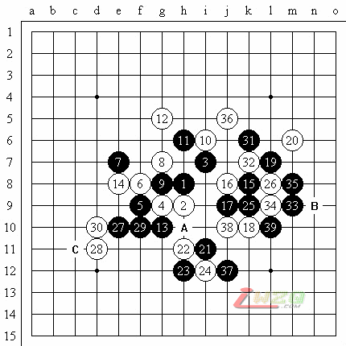

棋王顾险胜名人俞 勐将戈惜败组长张
#1 棋王顾险胜名人俞 勐将戈惜败组长张 作者：有志青年 发表时间：2008-4-6 8:53:45
（上海连珠消息 通讯员：阿彪）4月5日下午，2008年上海五子棋联赛第二节赛事补赛在古滇茶坊进行，其中，2007年上海名人邀请赛冠军俞满江六段和上海在位棋王顾炜八段的对局格外引人注意。俞满江佈局“丘月”，顾炜不假思索地提出交换。双方从序盘开始就非常激烈的争夺先手权，黑棋第15手变招起，面对黑棋咄咄逼人的气势，俞满江开始频频长考，爲谨慎起见，俞满江选择了稳健防御。实战黑31是个失着，局后顾炜表示这一步是临场计算发生严重错误下的手段。白32后顾炜花费了30分钟时间考虑黑棋的下一手应该下在哪里。黑33、35是无奈之举，白36体现了俞满江精深的算路。面对正在逐渐陷入绝境的黑棋，顾炜开始苦思应对之法，黑37是苦心的一手。或许是因爲成功防御了前半盘的关係，也可能是计算到下方黑棋无法获胜，而上方的白棋子力配置之强，黑棋是无法防御的，俞满江的白38显得太爲草率，也是全局唯一的败着，黑39后白认负。局后顾炜坦言临场搞错了变化，黑15还是直接下在黑21处更好，而白38下在A处最强。同时，顾炜倍加讚赏实战的白36，如果先B的话，那么黑的下一手就走C点，这样白棋的速度就慢了。

同组补赛的还有上海勐将、2006年全国赛男子成年组季军戈翀宇六段和2007年全国锦标赛男子成年组第12名张轶峰三段的对局。戈翀宇佈局“疏星”，被爱称爲“组长”的张轶峰执白应战。实战过程双方都是惊险万分，几经转换，局面趋向和棋。可惜由于时间的原因，最终戈翀宇超时告负。